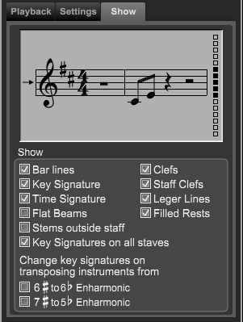

Track Inspector Panel - Track Show Tab
Track Inspector Panel - Track Show Tab
If the Track Inspector panel is not showing click on the Inspector button at top right of Control Bar or type "Shift-I" to open the panel.
If needed, click on the Track section at the top and then on the Show tab.
The Show tab area contains settings for how the current track's staff is displayed.

Staff Design area. Use this area to design a custom line arrangement for any staff. Traditional staves use five lines, but some instruments (particularly percussion) use staves with a different number of lines. Click the small squares to the right of the Staff Design area to show or hide any of up to sixteen staff lines. You can even create staves with no lines (these are particularly useful for indicating strum patterns in a lead sheet as shown in the following figure). The small arrow to the left of the Staff Design area indicates where the middle line is in a standard five line staff
Show area. Use this are to how the track's staff is displayed.
- Show Bar lines option. Select this option if you want Overture to display barlines. You normally leave this option checked unless you're notating music with no set meter or a strum pattern on a lead sheet.
- Show Key Signature option. Select this option if you want Overture to display the key signature of the selected staff. You normally leave this option checked unless you're notating a non-pitched instrument, tablature notation, or a strum pattern on a lead sheet.
- Show Time Signature option. Select this option if you want Overture to display the time signature of the selected staff. You normally leave this option checked unless you're notating music with no set meter, or unless you're notating a tablature staff or a strum pattern on a lead sheet.
- Flat Beams option. Select this option to display subsequent beams as flat rather than slanted. You may want to do this if slanted beams look jagged on your monitor. You can change the angle of a beam by dragging its ends.
- Stems outside staff - Select this option if you want to have stems stay out side the staff lines. This is commonly used on guitar tablature tracks.
- Key Signatures on all staves option. Select this option if you want Overture to display the current key signature at the beginning of each staff.
- Clef option. Select this option if you want Overture to display a clef on the staff. You normally leave this option checked unless you're notating some types of non-pitched instruments or a strum pattern on a lead sheet.
- Staff Clefs option. Select this option if you want Overture to display a clef on the staff. You normally leave this option checked unless you're notating some types of non-pitched instruments or a strum pattern on a lead sheet.
- Ledger Lines option. Select this option if you want Overture to display any needed ledger lines above or below the selected staff.
- Filled Rests option. Use this option in conjunction with the Options>Show>Filled Measure Rests command. Select this option if you want Overture to fill empty measures in the current track with whole measure rests. Deselect this option if you want Overture to leave empty measures in the current track.
- 6 # to 6 b Enharmonic option. Select this if you wish to display key signatures that contain six sharps as six flats. Some players prefer to read flats over sharps.
- 7 # to 5 b Enharmonic option. Select this is you wish to display key signatures with seven sharps as five flats.